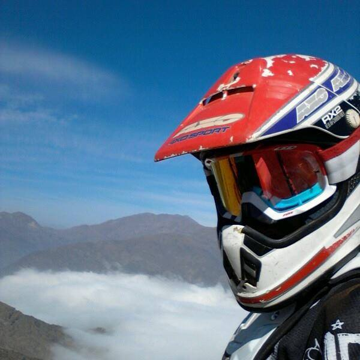

Curriculum Vitae

Ramiro Vasquez Muñoz
Sobre mi
Supervisor de terreno en salar de atacama, 20 años de experiencia, casado, 1 hijo 42 años.
Experiencia Laboral
Coordinador de operacion junio 2021-2024
A cargo de administrar y coordinar la operacion, movimiento de tierra y administracion de personal en planta salar de atacama.
Supervisor de terreno 2007-2021
A cargo de supervisar la operacion de apoyo de extraccion y mantenimiento de los estandares mina en faena los bronces Anglo american Chile
Habilidades
- Trabajo en equipo
- Manejo de personal
- Perseverancia
Estudios
- Excel avanzado
- Ingles avanzado
- Word
Portafolio